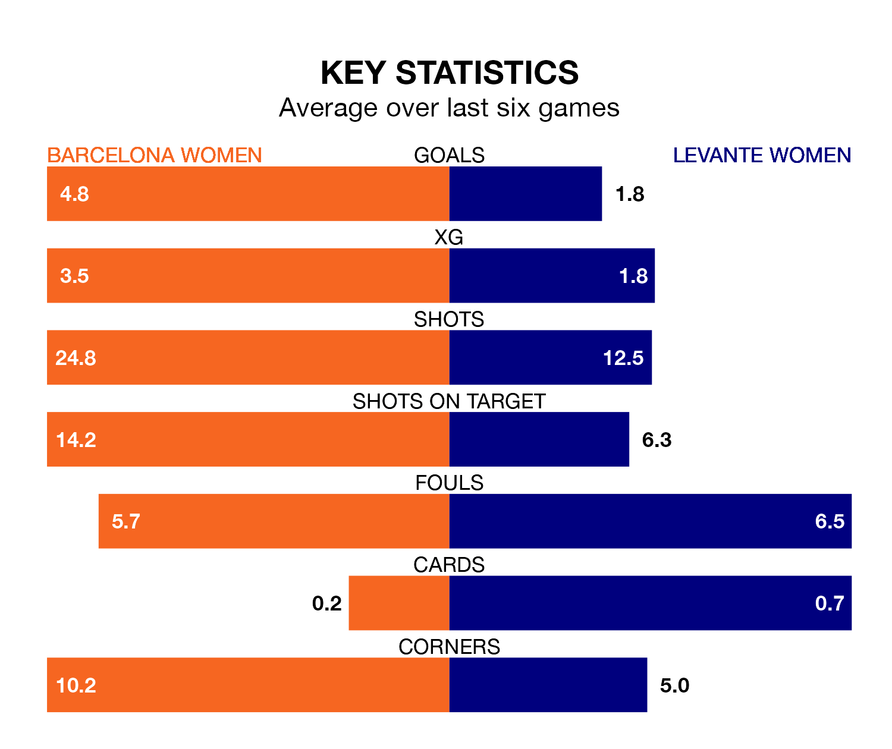

Two of Liga F's top sides face each other at Estadi Johan Cruyff in Wednesday's late kick-off, when table-topping Barcelona Women host third-placed Levante Women.
Barcelona have picked up 16 wins from 16 games so far this season, and sit 11 points above the visitors going into the 5pm match.
Levante, meanwhile, have won 11 and drawn four, picking up 37 points.
With 72 goals in 16 games so far this season, Barcelona are the league's highest scorers with 4.5 goals per game. And they are conceding fewer than average, letting in three goals at a rate of 0.2 per game.
Levante are also above average scorers, with 1.9 goals per game, compared to a league average of 1.6. They have conceded 0.5 goals per game.
The hosts are in exceptional form in Liga F, with six wins and no losses from their last six games.
With four wins and a draw over that period, the away side's form is worse – they have taken 13 points from 18, compared to Barcelona's 18.
In Caroline Graham Hansen, Barcelona have the league's sharpest shooter so far this season. She has notched 14 goals in 14 appearances.
Her goal rate of one every 68 minutes is much quicker than that of Gabriela Nunes da Silva, Levante's top scorer with a goal every 163 minutes, and a total of seven goals in 16 games.
In the last 10 years, Barcelona and Levante have played each other on 18 occasions. Barcelona won 15 of them, Levante one, and they drew twice.
On average, Barcelona scored 3.3 goals and Levante 0.4 in those matches.
Their last meeting was on March 11, when Barcelona won 4-0 away.
Barcelona's last match was on Saturday, a 3-0 win against Sevilla Women, with Claudia Pina Medina, Graham Hansen and Mariona Caldentey Oliver getting the goals for Barcelona.
Levante beat UD Granadilla Tenerife 1-0 last time out, on Sunday, with Natasa Andonova on the scoresheet.
Updated: 09:02 (UTC), 13/02/24